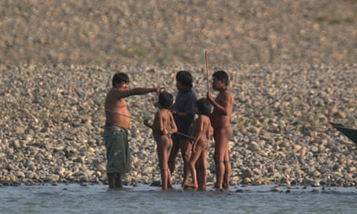
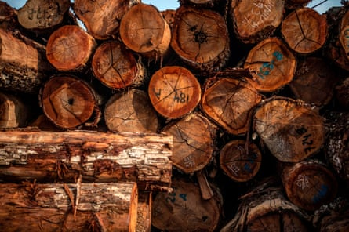
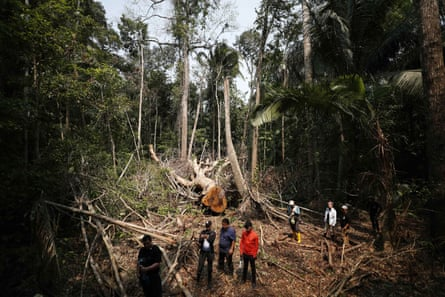
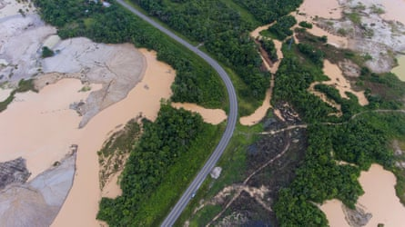
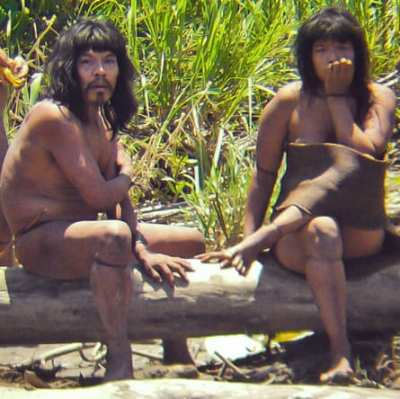

I n 1999, Beatriz Huertas, then a young anthropologist, travelled deep into the Peruvian Amazon to investigate reports of uncontacted Indigenous peoples . Along the Las Piedras River, people in Monte Salvado, a Yine Indigenous village, described how every summer, “ aislados ” – those who avoid sustained contact with outsiders – would appear across the river.
“They were coming into the fields and taking bananas,” says Huertas.
Huertas followed the trail north to the Tahuamanu River, where fishers also reported sightings. Crossing into Brazil’s Acre state, she collected more evidence – footprints, tools and local testimonies.
Her findings, compiled in a 2001 report for the Native Federation of the Madre de Dios River and Tributaries (Fenamad), recommended protecting 2m hectares (4.95m acres) for the wide-ranging Mashco Piro people.
Twenty-five years later, the Mashco Piro, the world’s largest uncontacted Indigenous group, face growing threats from logging, drug trafficking and the climate crisis in the Brazil-Peru borderlands. Recent raids in Brazil highlight their struggle for territory and resources, worsened by environmental changes and criminal activity. Despite legal protection and international agreements, cooperation between Brazil and Peru remains inadequate, putting the Mashco Piro at risk.
After Huertas’s report, Peru approved 800,000 hectares (1.98m acres) for protection, bounded by a straight north-south line. But on the other side of that line, 38 logging concessions were granted over the next two years, covering 694,584 hectares (1.73m acres) – including areas used by the Mashco Piro.

Mashco Piro Indigenous tribespeople emerge from the rainforest to gather on the banks of the Las Piedras River in Monte Salvado.Photograph: Survival International
In 2006, Peru passed a law protecting isolated and recently contacted peoples, creating six Indigenous reserves with stronger legal standing than earlier “territorial reserves”, including Madre de Dios, says Carlos Soria, an environmental lawyer and former head of protected areas. In 2016, a government commission approved expanding the Madre de Dios reserve by 240,471 hectares (593,000 acres), as many Mashco Piro nomads lived in logging concessions. But the expansion has never been implemented and logging concessions still remain in more than 176,000 hectares (435,000 acres).
This uneasy cohabitation has resulted in a long-term conflict in the wilds of Madre de Dios.
Ojo Público’s investigation , using Ministry of Culture data, found 81 instances of evidence of the Mashco Piro in and around the Madre de Dios reserve from 2016 to 2024, with 19 in the expansion area; four involved violent encounters.
Isrrail Aquise, coordinator of Fenamad’s defence of isolated peoples, says violence has changed community behaviour. “The women are not coming out, and the old men and children who used to come out are not appearing,” he says, adding that only able-bodied Mashco Piro men and boys are seen on the riverside. “They are protecting their vulnerable members probably because of the confrontations with loggers, whether legal or illegal.”
Lucas Manchineri, president of the local Indigenous association across the border in Brazil, says the climate crisis – bringing more extreme rain and drought – also disrupts seasonal routines. Headwater creeks dry up early, forcing the Mashco Piro downstream, closer to villages.
“Wherever land isn’t protected, there are miners, drug traffickers, loggers, illegal fishers and hunters and those people are pushing the Mashco Piro closer to our community,” he says. “We are fighting to protect our uncontacted relatives, but to do that, we need to protect our territory.”
Romel Ponciano, a Yine man from Monte Salvado, left, with members of the Mashco Piro tribe.Photograph: Ronald Reategui for The Guardian
To avoid confrontations, Peru’s Ministry of Culture maintains 19 control posts nationally for the eight Indigenous and territorial reserves. Most staff members are local people, such as Romel Ponciano, a Yine man from Monte Salvado. But, he says, the government “keeps cutting the budget. Each post needs six staff members because … it’s a territorial reserve with isolated people. Often we have only two people on duty – or none at all.”
Ponciano says the Mashco Piro population is increasing, making state presence more urgent. The exact population is unknown, but experts agree it is in the thousands. “I’ve seen their numbers grow between 2000 and today. They have increased a lot. Sometimes we see 200 at a time,” he says.
The Inter-American commission on human rights found that Peru has violated the rights of the Mashco Piro, Yor and Amahuaca peoples. After years of inaction, the case was referred to the Inter-American court of human rights , which in March 2025 demanded upgrades in protection for aislados in a similar case in Ecuador.
Yet, supporters of extractive industries often dispute the existence of isolated peoples. In 2007, Peru’s then-president, Alan García claimed: “To stop oil, they have created the ‘uncontacted’ native.” Recently, Loreto’s development business group launched a campaign denying the existence of isolated peoples in north-east Peru, despite clear evidence gathered by experts.
F or two decades, the timber industry has operated under 40-year leases in Mashco Piro territory. Now, some officials support a special zone where loggers and uncontacted people would officially coexist. “This sets a terrible precedent that could justify opening all of the isolated people’s territories for logging,” says Huertas, now a consultant for the Rainforest Foundation of Norway .
Indigenous organisations in Peru’s north-east successfully sued the Loreto regional government , forcing it to revoke 72 logging concessions in areas designated for isolated communities. If legal timber operations are allowed in uncontacted lands, Huertas fears such suits would fail, exposing isolated peoples to logging across millions of hectares.
Logs ready for cutting at a sawmill near Puerto Maldonado, Madre de Dios region.Photograph: Ernesto Benavides/AFP/Getty Images
At a December meeting, Carmen Inés Vegas Guerrero, Peru’s deputy minister of agriculture, argued that “without the concession, there would be more deaths” due to chaos and drug trafficking she claims would ensue without legal loggers. Her office did not respond to requests for comment.
The conflict persists even with some logging companies in Madre de Dios considered among Peru’s most responsible. The region was closely monitored after the 2005-2011 construction of the Interoceanic Highway, funded by the Inter-American Development Bank. Some logging firms have Forest Stewardship Council (FSC) certification .
In March 2025, Madre de Dios had five FSC-certified operations covering 573,680 hectares (1.4m acres). About half is held by Maderera Rio Acre SAC (Maderacre), with two concessions totalling 93,470 hectares (231,000 acres) overlapping the proposed reserve expansion, Ojo Publico’s investigation found.
Despite certifications, violent incidents continue. Maderera Canales Tahuamanu, a logging firm with 52,869 hectares, had its FSC certificate suspended after a confrontation in which Mashco Piro arrows killed two loggers and two more workers disappeared .
Julio Cusurichi, a Madre de Dios Indigenous leader, says: “We don’t know how many isolated people have died in these conflicts, but we believe that some have because in these kinds of conflicts it’s not only the loggers who are killed.”
A fallen shihuahuaco tree in Madre de Dios region. Indigenous people are increasingly seeing their territories threatened by illegal logging.Photograph: Paolo Aguilar/EPA
Carla Cárdenas, an Ecuadorian environmental lawyer and longtime FSC member, says the certification rules are flawed, with no mention of isolated peoples. FSC requires local consultation about logging plans, which is impossible with uncontacted groups.
Cárdenas drafted a motion to bar certification “in the case of any indication of the presence of Indigenous peoples living in voluntary isolation”. She says the language will be decided at the council’s October assembly in Panama, but she is unsure whether she can secure votes from FSC member companies.
“They will feel there are fewer territories for them to continue working under the FSC system,” she says. “The FSC needs to show that those companies are respecting human rights.”
FSC’s representatives did not respond to the Guardian’s request for comment, but released a statement indicating that the Maderacre certifications were being reviewed.
Local authorities often support logging. At a December 2024 meeting , Tahuamanu mayor Rubén Darío, on the land categorisation committee, called for a new study to verify if the Mashco Piro truly need the land, citing the forest’s timber value for his municipality. His office sent a report to the Ministry of Culture questioning the validity of the 2016 study that recommended the reserve’s expansion. There is no indication that the ministry has responded.
A government expert, speaking anonymously, says: “Evidence from recent years all extends beyond the expansion area of the Madre de Dios territorial reserve. If a new, objective study is done, I’m absolutely sure that it would be expanded substantially more.”
For now, no decision has been made. As long as the committee does not convene, logging in Mashco Piro territory continues. No other reserve decisions can be made, including the long-delayed Yavarí-Mirim reserve on Peru’s northern border with Brazil. Ministry of Culture officials declined to comment.
L ogging is not just a Peruvian problem. Maria Luiza Pinedo Ochoa, executive coordinator of the Acre Pro-Indian Committee (CPI-Acre), a Brazilian advocacy group, highlights the threat from Peruvian logging but says pressure comes from both sides. “Road building on the Brazilian side is a factor that really worries us,” she says.
The Acre government plans a road between Santa Rosa do Purus and Manoel Urbano. The federal public prosecutor has sided with environmental and Indigenous groups trying to stop the highway, but most state politicians support it. Without intervention, Mashco Piro territory could be swiftly and irreversibly fragmented.
The one road between the two countries, the Interoceanic Highway, brought a devastating gold mining industry, permanent logging concessions , and side roads snaking into the forest.
A road cuts through an area deforested by illegal gold mining in the Madre de Dios region, Peru.Photograph: Rodrigo Abd/AP
Cusurichi, now leading efforts to protect isolated peoples at Peru’s national Indigenous organisation (Aidesep), criticises both governments: “With the Peruvian government, we are going through a very challenging situation. Instead of protecting lives, the lives of these people, they are catering to extractive interests,” such as oil, timber and road building.
Of Brazil, he says: “We thought that with this new Brazilian leader [Luiz Inácio Lula da Silva] things were going to get better, but the meetings we have had with Indigenous organisations indicate that it’s nothing but talk.”
On 21 January, the Brazilian government took the first step toward creating the Chandless River Mashco Indigenous territory, covering 538,338 hectares (1.33m acres).
Still, Marco Aurélio Milken Tosta, head of Brazil’s general coordination for isolated and recently contacted Indigenous peoples, says binational coordination is needed. Peru and Brazil signed an agreement in 2014 and have worked well together in the past, but the two-year accord was never renewed. “We need a new agreement,” he says, “The isolated people don’t have a border.”
With official cooperation lacking, Indigenous organisations have created a binational commission and championed two large “territorial corridors” for isolated peoples, spanning 25m hectares (61.7m acres).
Volunteers among the Manchineru people in Brazil’s Acre state, who speak a language closely related to the Mashco Piro and call them parentes desconfiados (“wary relatives”), monitor the Mashco Piro to ensure no one gets too close. Recently, they have observed changes in behaviour. “They will appear soon, more of them, and probably before summer, which is an unusual dynamic,” says Lucas Manchineri.
Members of the Mashco Piro tribe at an undisclosed location near the Manu national park in south-eastern Peru.Photograph: D Cortijo/AP
Agents such as Ponciano occasionally shout conversations – which do not constitute contact – across the river to Mashco Piro, who speak a similar language. Sometimes, they talk at closer quarters. Ponciano says the Mashco Piro simply don’t understand logging. “‘Why do they cut down the big trees?’ they asked me. “I couldn’t explain,” he says. “For them, the trees are like monuments. They don’t want us to cut them down.”
Ponciano has asked if they want to make contact. “They have always told me the same: ‘No, because you are bad,’” he says. “When I tell them I’m not bad, they say: ‘Yes, you are not bad. But the others are bad.’”
- This series on uncontacted peoples is a partnership between the Guardian and Brazilian newspaper O Globo and is supported by the Open Society Foundations , the Ford Foundation and the Pulitzer Center . Read it in Portuguese here